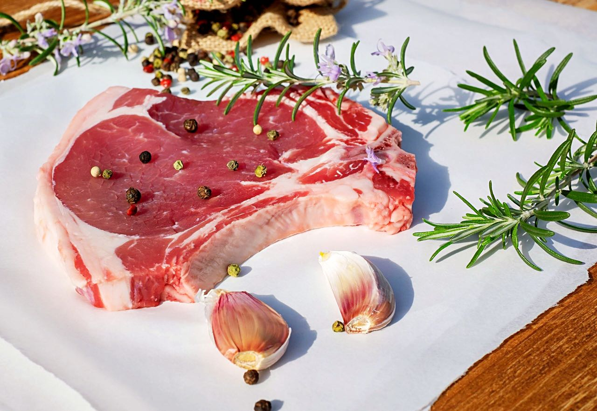
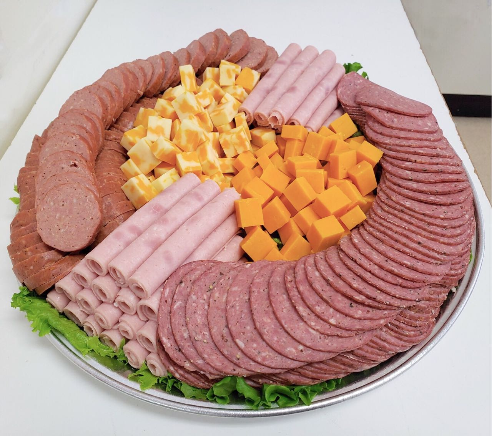
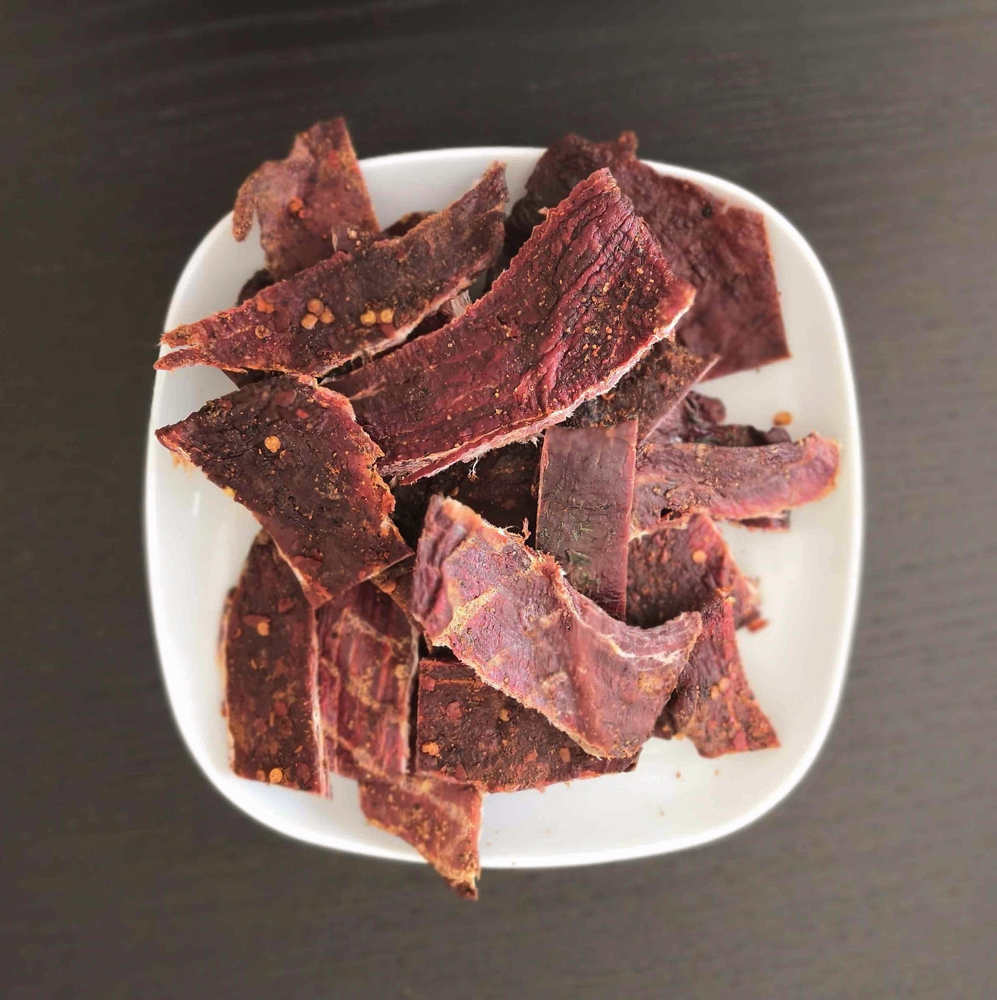

For a preview of some of the fresh meats, sausages, deli meats, jerky, and groceries we carry,
take a look at our General Menu.
We also offer the convenience of Online Ordering and curb-side / in-store pick-up service.
We put this general menu together to make it easy for you to order our top sellers.
At the bottom of the order form, there's an area where you can request all your favorite cuts and grocery items that you don't see in the menu.
-Featured Menu-

Butcher Cuts
CANADA AA OR HIGHER BEEF & MANITOBA PORK
LOCALLY-SOURCED FRESH MEATS & POULTRY
LOCALLY-SOURCED FRESH MEATS & POULTRY
- Steaks
- Roasts

Finest Homestyle Sausage & Deli Meats
- Freshly-Prepared Food Tray - custom deli trays to make your occasion special
- Transcona Loaf - originated from our wonderful town Transcona
- Pork Loin Roast stuffed with Apple, Cinnamon and Breakfast Sausage - customized orders available

22 Flavours of High Protein Jerky
NEED JERKY? WE GOT YOU COVERED. STANDARD SHIPPING ACROSS MB
- Beef Jerky
- Pork Jerky
- Chicken Jerky
- Turkey Jerky
Featured Products
- Meat & Cheese Bouquet - A Special Bouquet for your Cared Ones.
Holiday Highlights
Our Homestyle, Fully Cooked, Smoked to Perfection
Pre-Order for your Thanksgiving, Christmas, and Easter Meals
Homestyle Hams:
Pre-Order for your Thanksgiving, Christmas, and Easter Meals
Homestyle Hams:
- Whole Leg of Ham
- Half Leg of Ham
- Picnic Shoulder Ham
- French Rack of Ham
- Crown of Ham
- Prime Rib Roast
- French Rack of Pork
- Crown Roast of Pork
Contact us to pre-order today!